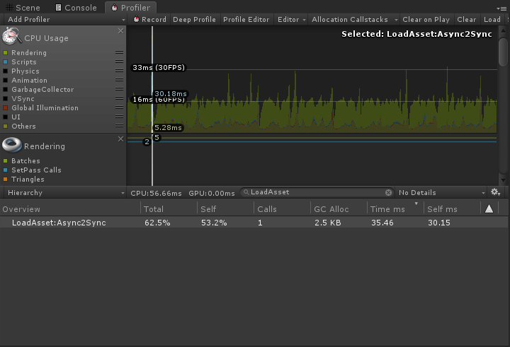

资源加密
xasset 2022.1 团队版提供了新的资源加密更新机制和单元测试。所有资源全部提供加密支持，加密后的资源只要 Unity 打包输出的 AssetBundle 的 Hash 不变，不用更新，并且，可以进行强校验。
加密对比
不少人使用流加密，而实际上，在 Android 上，使用流加密在 App 启动的时候要把资源 Copy 到 jar 安装包的外部读写目录，这不仅要占用额外的存储空间，而且需要用户更多的等待时间。
不过可以放心的是，xasset 使用了独特的加密技术，不仅可以防止安装包的资源被 AssetStudio 之类的工具轻易破解，而且在测试的 Android 设备上，还能提升 IO 加载性能。
另外，更不需要把资源从 jar 安装包 Copy 到外部的读写目录。怎么做到的就不细说了，不过可以确信的是，这种加密机制是一种相对安全，但最高效，最省空间和时间的机制。
要使用资源加密功能，仅需在 Settings 中勾选 encryption 就可以开启这个功能。以下是加载同一个资源加密前后的 CPU 耗时和 GC 的真机 Profiler 采样数据：
| CPU（MS） | GC（KB） | |
|---|---|---|
| 加密 | 30.15 | 2.5 |
| 未加密 | 33.12 | 2.7 |
注：测试设备为 Song XZs，Android 8.0。
测试记录
加密版本的 Profiler 采样截图如下：

未加密版本的 Profiler 采样截图如下：
测试代码
以下是测试时使用的代码片段：
public void Load()
{
const string assetPath = "Logo";
var assetType = typeof(Sprite);
Profiler.BeginSample("LoadAsset:Async2Sync");
_assets.Add(Asset.LoadAsync(assetPath, assetType));
var asset = Asset.Load(assetPath, assetType);
image.sprite = asset.Get<Sprite>();
Profiler.EndSample();
image.SetNativeSize();
_assets.Add(asset);
}
声明
需要注意的是，安装包机密功能在不同的平台可能有不同的标准，这里的结果仅供参考。